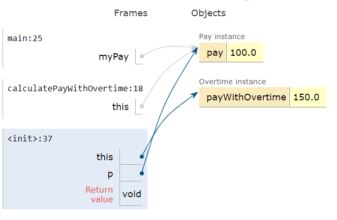

Current Object and this as an Argument
Within an instance method or a constructor, the keyword this acts as a special variable that holds a reference to the current object.
The current object is the object whose method or constructor is being called.
this changes with the objectIn the following class Person, when we create an object p1 and call the constructor or p1.setEmail(), the word this refers to p1.
When we make the same method calls with object p2, this refers to p2.
The source Java visualizer direction is omitted; the trace task is retained.
activecode:: PersonClassThisObserve the use of the keyword this in the code below.
Trace the memory and watch how this refers to different objects when the code is run.
public class Person
{
// instance variables
private String name;
private String email;
private String phoneNumber;
// constructor
public Person(String name)
{
this.name = name;
}
// accessor methods - getters
public String getName()
{
return this.name;
}
public String getEmail()
{
return this.email;
}
public String getPhoneNumber()
{
return this.phoneNumber;
}
// mutator methods - setters
public void setName(String name)
{
this.name = name;
}
public void setEmail(String email)
{
this.email = email;
}
public void setPhoneNumber(String phoneNumber)
{
this.phoneNumber = phoneNumber;
}
public String toString()
{
return this.name + " " + this.email + " " + this.phoneNumber;
}
// main method for testing
public static void main(String[] args)
{
Person p1 = new Person("Sana");
System.out.println(p1);
Person p2 = new Person("Jean");
p2.setEmail("jean@gmail.com");
p2.setPhoneNumber("404 899-9955");
System.out.println(p2);
}
}The expected output from main is:
Trace focus: in each constructor or setter call, this is the object receiving the call.
The this variable can only be used in instance methods and constructors.
Class methods cannot refer to this or instance variables because they are called with the class name, not an object.
Therefore, there is no this object in a class method.
The keyword this is sometimes used by programmers to distinguish between variables.
Programmers can give the parameter variables the same names as the instance variables.
this can distinguish them and avoid a naming conflict.
Both the instance variable and the parameter variable are called name in the code below.
name on its own looks for the closest local variable, the parameter variable.
this.name refers to this object’s instance variable.
this.instanceVariable can be used to distinguish between this object’s instance variables and local parameter variables that may have the same variable names.
The this variable can be used anywhere you would use an object variable.
You can even pass it to another method as an argument.
Consider the classes Pay and Overtime.
The Pay class declares an Overtime object and passes in this, the current Pay object, to its constructor.

this, myPay, and p refer to the same object
The image shows how this, myPay, and p all refer to the same object in memory.
activecode:: PayClassThisWhat does this code print out?
Trace through the code and notice how the this Pay object is passed to the Overtime constructor.
public class Pay
{
private double pay;
public Pay(double p)
{
pay = p;
}
public double getPay()
{
return pay;
}
public void calculatePayWithOvertime()
{
// this Pay object is passed to the Overtime constructor
Overtime ot = new Overtime(this);
pay = ot.getOvertimePay();
}
public static void main(String[] args)
{
Pay myPay = new Pay(100.0);
myPay.calculatePayWithOvertime();
System.out.println(myPay.getPay());
}
}
class Overtime
{
private double payWithOvertime;
public Overtime(Pay p)
{
payWithOvertime = p.getPay() * 1.5;
}
public double getOvertimePay()
{
return payWithOvertime;
}
}The expected output from main is:
myPay starts with 100.0, and the Overtime constructor uses that Pay object to calculate 100.0 * 1.5.
mchoice:: AP-this-argThe following code segment appears in a class other than Pay or Overtime.
What, if anything, is printed as a result of executing the code segment?
this as an argument10.015.020.030.0The pay starts at 20.0.
Then calculatePayWithOvertime() passes the current Pay object to the Overtime constructor.
The overtime calculation multiplies by 1.5, so the printed value is:
this as a reference to the current objectthis changes from p1 to p2 in the Person tracethisthis.instanceVariable to distinguish a field from a same-name parameterOvertime ot = new Overtime(this)30.0Next: Bank Account challenge.